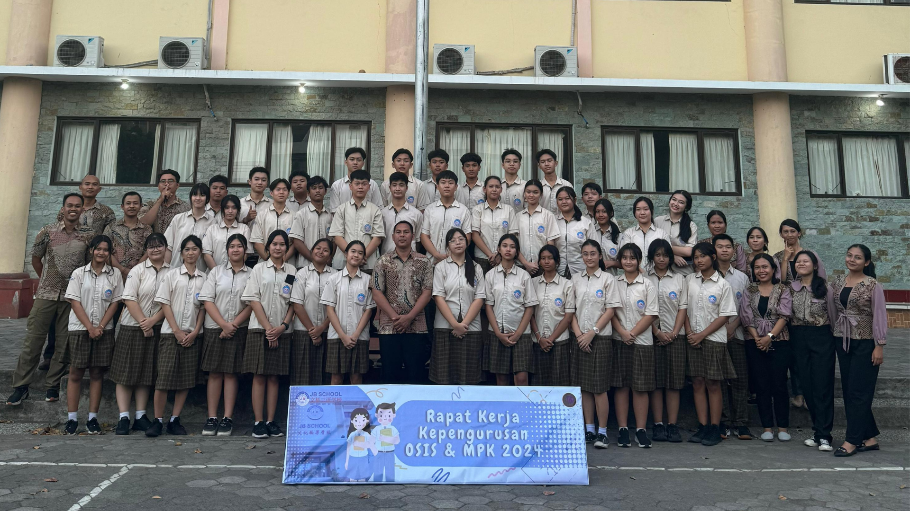
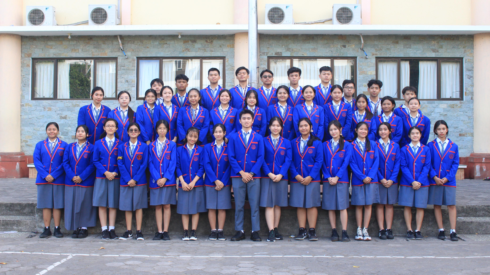

Frontend
Tools for building structured, responsive user interfaces.
available for internship opportunities
Computer Science student at BINUS University, focused on Front-End Development and growing toward Software Engineering. I enjoy turning ideas into responsive, practical web experiences.
who I am
$ cat about-me.txt
Computer Science student in BINUS University's Master of Computer Science (Master Track) program.
Building practical web experiences while strengthening software engineering fundamentals.
$ status
● open to internship opportunities
I'm Federico Justian Wijono, usually called Fico. I'm currently studying in the Master of Computer Science (Master Track) program at BINUS University, with a current GPA of 3.20 / 4.00.
My practical focus is web development — especially JavaScript, React, Vue.js, and Tailwind CSS — while continuously strengthening my software engineering fundamentals through data structures, algorithms, databases, and version control.
Beyond coding, I bring hands-on organizational and technical experience—ranging from coordinating student leadership teams in OSIS (including producing live streams via OBS to YouTube for school esports events and graduation ceremonies) and active involvement in the BINUS Volleyball Club, to managing professional technical productions in multimedia, sound, and stage lighting for major events. This background has shaped me to thrive under pressure, collaborate effectively, and adapt quickly in dynamic environments.
my toolbox
Tools for building structured, responsive user interfaces.
Server-side programming languages and database tools.
Version control, developer tools, and hosting workflow.
Foundational computer science and software principles.
what I've done
BINUS University
Coordinate weekly training schedules, member attendance, and club activities while working within a team environment.

Rock Kuta Indonesian Bethel Church
Supported multimedia, sound, and stage-lighting operations for regular services and major events including Christmas and Easter. Completed stage-lighting training and provided technical troubleshooting for computers, software, and equipment.
SMA Jembatan Budaya
Led a four-member team and coordinated event teams of 7–9 people. Supported major school events including the school's first graduation livestream, JB Idol, and charity activities.

SMA Jembatan Budaya
Contributed to JunESPORT 2023, the school's first esports event, including livestream production and event preparation. Also supported JEDA, JB Idol, and the first P5 project.

selected work
Personal portfolio website built to present my projects, technical skills, education, and experience through a responsive developer-focused interface.
Responsive website developed and deployed using HTML, CSS, and JavaScript, with page layouts and front-end interactions built from scratch.
Automated workflow connecting Google Forms responses to Google Sheets, with color-coded statuses for present, absent, excused, and sick leave.
academic background
BINUS University · West Jakarta
Current GPA: 3.20 / 4.00 · Expected graduation: 2030SMA Jembatan Budaya · Bali
certifications & learning
NVIDIA
Certificate of Competency · Issued October 19, 202507 / contact
I'm open to Front-End Developer and Software Engineer internship opportunities. If you'd like to talk about a role, project, or collaboration, feel free to reach out.